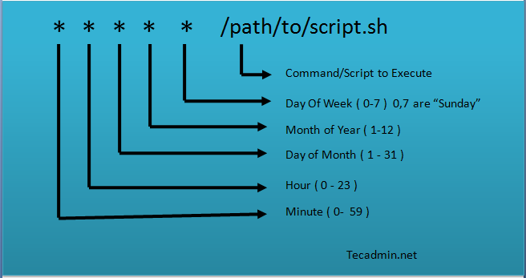

Linux 常用命令汇总
Linux 系统命令
crontab

文件系统权限设置(chmod)
Text Only
使用 ls -l 可查看文件权限，rwx 分别表示 读、写、执行。
744 的意思是**文件所属的用户**有 rwx 限，**群组**有 r-- 权限，**其他用户**有 r-- 权限。
数字的三位分别代表：所属用户，群组用户，其他用户。每一位数字又可以转换为二进制数：
Text Only
为了方便记忆，整理出这些规则：
Text Only
所以：644为 4+2 4 4，即**所属用户**有读、写权限，**群组**只有读权限，**其它**只有读权限。
让文件属于当前用户(chown)
Bash # 递归文件夹属于当前用户
chown -R $USER :$( id -gn $USER ) ./target-folder
# 文件所有者改为用户 bob，文件用户组改为用户 bob 登录系统时所属的用户组。
chown -R bob: file
添加当前用户到用户组
需要重新登录或重启才能生效
Bash # 添加当前用户到 vboxsf 组
adduser $USER vboxsf
# 如果上面那条执行失败就用这一条
usermod --append --groups vboxsf $USER
配置 CPU 调度
Bash # 使用root执行
install cpufrequtils
# 查看全部CPU状态
# 查看支持的调度方式
-g
# 设置调度方式
-g powersave
让命令在后台运行(nohup)
Bash # 日志会输出到当前目录 nohup.out
<command> &
创建符号链接
Linux:
Bash -s /源文件( 夹) / /目标文件( 夹)
-s /usr/project/dist/ /usr/server/nginx/www/my-website
Windows:
Text Only
rsync 命令
rsync 是一个常用的 Linux 应用程序，用于文件同步。GUI 客户端：grsync
Bash # 复制文件
-avrh --progress /pathA/ /pathB/
# 单向同步（备份）
-avrhc --delete --progress /pathA/ /pathB/
命令解释：
-a 归档模式，等同于 -rlptgoD，可以同步元信息（比如修改时间、权限等）-v 输出更多详细信息-r 递归目录-h 以人类可读的格式输出数字-c 默认情况下，rsync 只检查文件的大小和最后修改日期是否发生变化，如果发生变化，就重新传输；使用这个参数以后，则通过判断文件内容的校验和，决定是否重新传输--progress 在传输过程中显示进度--delete 这将删除只存在于目标目录、不存在于源目录的文件-z 传输时压缩-P 传输进度
远程拷贝
Bash # 从主机拉数据
-avzP --delete root@{ remoteHost} :{ remoteDir} { localDir}
# 示例：
-avzP --delete root@192.168.1.100:/tmp/rtest1 /tmp/
# 向备机推数据
-avzP --delete { localDir} root@{ remoteHost} :{ remoteDir}
# 示例：
-avzP --delete /tmp/rtest1 root@192.168.1.101:/tmp/
参考：rsync 用法教程 使用rsync同步目录 rclone
使用 dd 命令创建引导盘
参考：How to create a bootable Ubuntu USB flash drive from terminal?
首先卸载你的目标磁盘分区
Text Only
如果你不确定你的盘的代号，使用 lsblk 查看，会输出如下的结果，上述的两个 <?> 分别表示磁盘 (disk) 号和分区 (part) 号
Text Only
使用下面命令写入对应的磁盘 (disk)：
Text Only
input.iso 是输入文件（光盘镜像），/dev/sd<?> 是目标磁盘。这种方法速度很快，从未失败
使用 dd 命令创建空文件，格式化并挂载
Bash # 创建一个 1024MiB 的文件，并写入空数据，如果文件过大会占用很多时间
if = /dev/zero of = test.img bs = 1M count = 1024
# 创建一个 32GiB 的文件（瞬间），实际上占用空间为 0
if = /dev/zero of = test.img bs = 1M count = 0 seek = 32768
# 格式化 test.img (创建 ext4 文件系统)
./test.img
# 挂载到系统
mkdir /mnt/backup
mount ./test.img /mnt/backup
使用 iptables
iptables 是一个配置 Linux 内核 防火墙 的命令行工具，大多数发行版都内置了这个命令。
Bash # 屏蔽一个IP
-I INPUT -s <IP地址> -j DROP
# 显示已添加的屏蔽规则
-L INPUT --line-numbers
# 如果添加错了，则删除一条规则（num为1）
-D INPUT 1
注意：规则在重启后失效，如果要让其开机后自动生效，需要进行配置，这取决于你的 Linux 发行版。一些通用的解决方案如下：
保存 iptables 到文件：
Bash #这包括了ipv4和ipv6规则，如果只有ipv4的规则可以只执行第一条
> /etc/iptables-rules
> /etc/ip6tables-rules
重启后重新加载文件：
Bash iptables-restore < /etc/iptables-rules
ip6tables-restore < /etc/ip6tables-rules
如果使用 iptables-persistent 则更加方便：
Bash apt install iptables-persistent
# 每当设置了新的iptables规则后，使用如下命令保存规则即可
# 开机后会自动加载已经保存的规则
save
参考：
类 Debian 系统
快捷切换 Ubuntu TUNA 镜像源
Bash /etc/apt/sources.list /etc/apt/sources.list.bak
-i "s/mirrors.ubuntu.com/mirrors.tuna.tsinghua.edu.cn/" /etc/apt/sources.list
-i "s/security.ubuntu.com/mirrors.tuna.tsinghua.edu.cn/" /etc/apt/sources.list
# sed -i "s/http/https/" /etc/apt/sources.list
update
Ubuntu 安装 wine
Bash #sudo apt install wine64
dpkg --add-architecture i386
-qO- https://dl.winehq.org/wine-builds/Release.key | sudo apt-key add -
apt-add-repository 'deb http://dl.winehq.org/wine-builds/ubuntu/ artful main'
update
apt-get install --install-recommends winehq-stable
--version
# 安装winetricks（Wine的辅助配置工具，超级便利，可以解决中文字体方块问题）
apt install --install-recommends winetricks
安装中文字体：复制 simsun.ttc 到 ~/.wine/drive_c/windows/Fonts
解决双显卡笔记本 (Intel+NVIDIA) 安装 Ubuntu 无法启动的问题
方法一：
进入 grub 界面后，在选中的默认启动项按 E 键进入编辑，将 quite splash 改为 quite splash nomodeset，按 F10 启动系统，此时启动的系统使用集显并且关闭了显卡加速（软件渲染）。
装完系统后，重启需要再次按照上述操作执行一遍，进入新系统之后只需在驱动管理器里选择 NVIDIA Corporation 提供的专用驱动即可彻底解决问题。
其他方法：
在 grub 界面，按 E 键进入编辑模式。在 quiet 的后面空一格加上代码：acpi_osi=! acpi="windows 2009"，然后按 F10 启动。
进入系统后，编辑 sudo vim /boot/grub/grub.cfg，查找 quiet，并在第一个quiet后面空一格加上这行代码：acpi_osi=! acpi="windows 2009"，并保存退出。
重启，问题解决。
其他方法：
在 grub 界面，按 E 键进入编辑模式。
修改 quiet splash --- 为 nomodeset quiet splash，然后按 F10 启动。
或在 quiet 后空格加 nouveau.modeset=0，然后按 F10 启动。
MintLinux 安装后配置
首先配置软件源和输入法框架fcitx，打开设置可以找到配置项
Bash # 安装完输入法框架后，全局字体会变成楷体，可以安装文泉驿字体解决
apt install ttf-wqy-zenhei
# Linux Mint 下禁用 Alt 拖拽窗口
apt install dconf-tools
# 然后在 org -> cinnamon > desktop > wm > preferences 下面的 mouse-button-modifier 中修改 <Alt> 变为 <Super> 或者 <Ctrl>。
# 把capslock改为ctrl键
Settings → Keyboard Layouts → Options → Caps Lock key behavior → Select Make Caps Lock an additional
# 解决 Linux Mint PC 前面板没声音的问题
apt-get install pavucontrol
# 设置鼠标滚动速度
apt install imwheel
## Download the code below http://www.nicknorton.net/mousewheel.sh
## Save it into your home folder, make it executable. Run it and enjoy.
# 主题美化下载
安装 deb 软件包
安装deb：sudo dpkg -i xxx.deb；如果遇到 “dpkg: 依赖关系问题使得 xxx 的配置工作不能继续”，解决方案：sudo apt -f -y install
让 Ubuntu 支持挂载 exFAT 文件系统
Bash apt install exfat-fuse exfat-utils
重启 KDE Plasma 桌面环境
有时候 KDE 会莫名其妙的卡死，这时候如果不想重新登录，可以用命令重启桌面。按 alt+space 或 alt+F2 启动 KRunner，输入 konsole 启动终端。
KDE4:
Text Only
KDE5:
Text Only
KDE5.10 及更高版本:
Text Only
重启 kwin
Android 系统
刷新 Android 设备媒体
Bash # 如果要彻底重置，请清除 com.android.providers.media 的数据
shell am broadcast -a android.intent.action.MEDIA_MOUNTED -d file:///sdcard
关闭 Android 活动网络检测(captive_portal_detection/网络图标感叹号)
Bash shell "settings put global captive_portal_detection_enabled 0"
Linux 软件
Xfce 音量控制面板
Text Only
然后在面板添加 Pulse Audio Plugin 即可。
另一个方法
Bash apt-get install volumeicon-alsa
xfce4-volumed
volumeicon&
Linux 安装 on-my-zsh
Bash # 安装zsh与git
apt install zsh git
# 手动下载安装
clone --depth= 1 https://github.com/ohmyzsh/ohmyzsh.git ~/.oh-my-zsh
~/.oh-my-zsh/templates/zshrc.zsh-template ~/.zshrc
# 把zsh设为默认shell
chsh -s $( which zsh)
如果 chsh 时出现问题，首先使用 which zsh 查看 zsh 的位置，然后 vim /etc/passwd，参考这样修改：
Text Only
对于群晖用户，vim ~/.profile，加入以下内容：
Bash if [[ -x /usr/local/bin/zsh ]] ; then
export SHELL = /usr/local/bin/zsh
exec /usr/local/bin/zsh
fi
将文件夹制作成 iso 光盘镜像
Text Only
其中：
dist.iso 生成的目标文件名
diskLabel 指定光盘的卷册集ID（光驱在电脑里显示的名称）
fromFolder 来源文件夹
或使用图形化工具：K3b
Linux 网络配置
参考：
查看所有网络适配器
启用/禁用网络
Bash # ifconfig [NIC_NAME] down/up
enp0s8 up
enp0s3 down
# 设置静态ip
enp0s8 192 .168.56.5 netmask 255 .255.255.0 up
保存网络设置（Debian/Ubuntu）
Text Only
Bash # 可能需要配合 ifup 才能生效
install -y ifupdown
enp0s8
重启网络服务
Bash networking restart
restart systemd-networkd
修改路由连接互联网的优先级(metric)
Metric indicates the 'distance' to the target.
Bash # 查看当前路由表
# ifmetric动态某接口的metric，立即生效
enp0s3 0
enp0s8 100
用 ifmetric 修改后的路由表（重启后失效）：
Text Only
network-manager 命令行网络管理器
Bash # install
install -y network-manager
start network-manager
# CLI
con show
# nmcli con down/up
con down 'Wired connection 1'
dev status
# UI
Linux 挂载 WebDav
Bash # 安装 davfs2
pacman -S davfs2
sed -i 's/# use_locks 1/use_locks 0/g' /etc/davfs2/davfs2.conf
# 创建挂载点文件夹
NAS
# 查看自己的用户id
user
# 挂载
mount.davfs http://192.168.0.123:5005 ./NAS -o uid = 1000
参考：如何在各个平台下挂载WebDAV
Linux 时间校准
Bash # 查看系统时间
# 查看 BIOS 硬件时间
--show
# 互联网时间同步
0 .cn.pool.ntp.org
# 将时间写入BIOS
-w
终端设置代理
Bash # 走 http 代理
export http_proxy = "http://localhost:port"
export https_proxy = "http://localhost:port"
# 走 socks 代理
export http_proxy = "socks5://127.0.0.1:1080"
export https_proxy = "socks5://127.0.0.1:1080"
# 或者直接设置所有
export ALL_PROXY = socks5://127.0.0.1:1080
Linux 端口占用查询
查看端口号对应的进程PID/名称：netstat -ntpl
查看 nginx 监听的端口：netstat -nlp | grep nginx
根据PID查看进程的目录，例如进程号为2430：ll /proc/2430/exe
2023年3月28日 11:59:36
2023年3月28日 11:59:36
{kind=link}